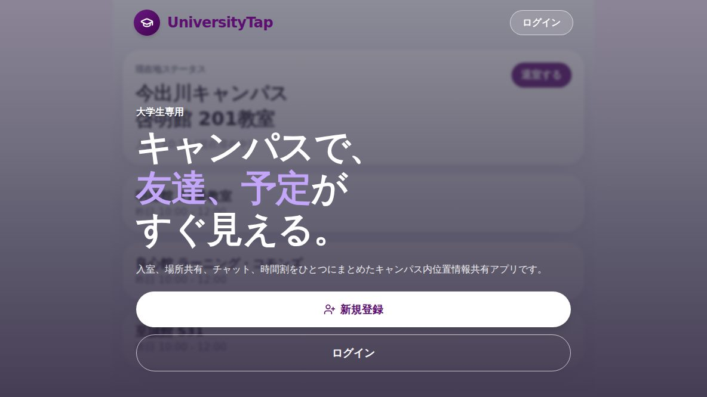
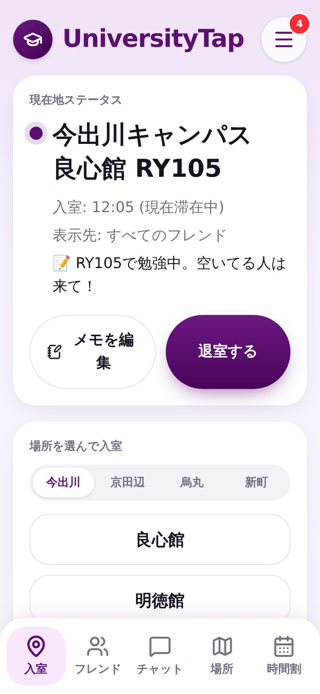
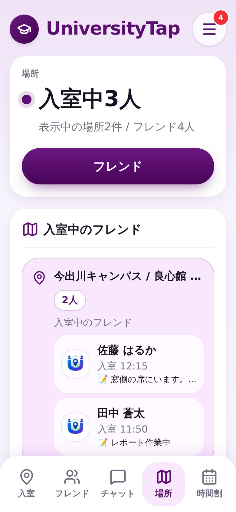
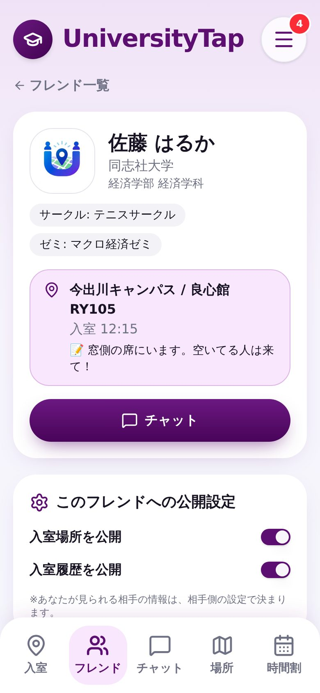
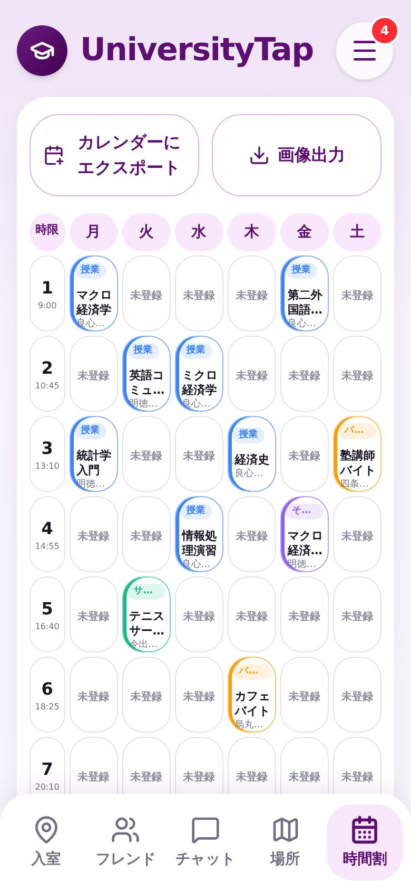
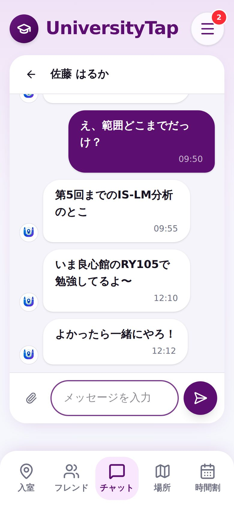

01 / Challenge · 解決したいこと
大学では「いまどこにいる？」「次の空きコマいつ？」を毎回チャットで聞き合っていて、待ち合わせや合流に手間がかかる。一方で、GPSで常に位置を見られるのは抵抗がある。
Work / 2026
教室に「入室」するだけで、いまどこにいるかをフレンドに共有できる大学生向けのキャンパスSNS。居場所・時間割・チャットがひとつのアプリにまとまっている。

大学では「いまどこにいる？」「次の空きコマいつ？」を毎回チャットで聞き合っていて、待ち合わせや合流に手間がかかる。一方で、GPSで常に位置を見られるのは抵抗がある。
キャンパス → 館 → 階 → 教室を選んで「入室」すると、いまいる場所とひとことメモがフレンドに共有されるアプリ。GPSは使わず、自分で入室したときだけ共有されるので、見せたくないときは見せなくていい。





React 19 + TanStack Start（TypeScript）、Tailwind CSS v4 + shadcn/ui。認証・データベース・ファイル保存・リアルタイム更新は Supabase（Lovable Cloud）。配信は Cloudflare Workers。
同志社大学の4キャンパスに対応し、館45件・教室2,450件の教室データを登録済み。「ゲストで試す」からデモのフレンド・時間割・チャットで誰でも体験できます（下の画面はゲスト用のデモデータです）。